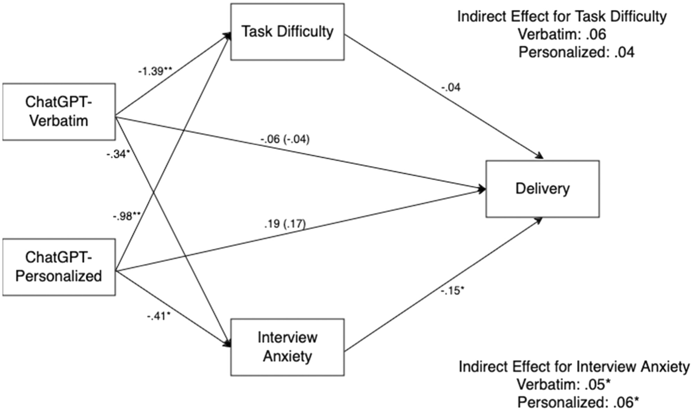

AI in the Interview
The asynchronous video interview creates an easy opening for AI use because responses are recorded rather than delivered live to a person. That makes ChatGPT useful in the moment, but it also raises the question of whether the interview is measuring the student or the tool.
- Students can use AI to shape answers faster under pressure.
- The interview begins shifting away from natural communication.
- What gets evaluated can become access to AI assistance instead of genuine ability.
Performance in the Moment
One of the strongest points in the article is that AI can indeed help candidates perform better in the moment. That is why it is appealing to students in the first place.
- ChatGPT can provide cleaner wording and stronger structure.
- A candidate may appear more polished than they would on their own.
- The short-term result looks better, but that does not mean real interview skill was built.
The Delivery Problem

The figure helps reinforce that improved performance is not the same as improved delivery.- AI may lower pressure and help organize responses.
- That does not automatically build a natural speaking style.
- A student can still sound less genuine, less confident, or too dependent on generated wording.
- That weakness can surface later in live interviews or professional conversations.
Why This Matters for Students
In computer science education, interviewing is part of becoming a professional, not just passing a checkpoint.
- Students need to explain projects, ideas, and technical decisions clearly.
- Struggling a bit under pressure is part of building that skill.
- If AI carries the conversation for them, then that growth is being skipped.
- The student may get the result now while falling behind in genuine communication later.
Preparation Versus Dependence
AI is not the problem by itself. The issue is how it is used.
- Using AI for mock questions and practice is reasonable.
- Using AI for feedback on weak answers can be helpful.
- Using AI during the actual interview crosses into dependence.
- Students should use AI to sharpen their thinking, not replace their voice during evaluation.
The Long-Term Risk
The article ultimately supports a trade-off that should concern students in computer science.
- AI can raise performance in the short term.
- At the same time, it can weaken authentic confidence and self-presentation.
- A student may win one interview while losing the chance to develop lasting professional skill.
- That is why AI works best as preparation, not as a hand-held substitute in the moment.
Student Survey
Scan the QR code below to participate in our survey.